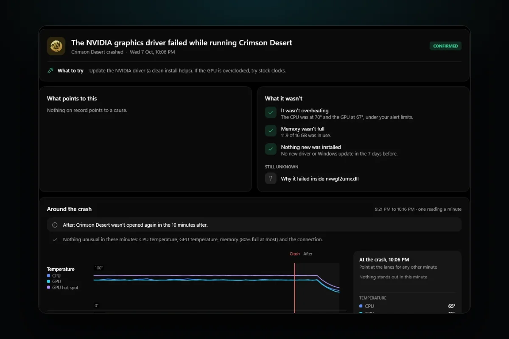

PC problems · Crashes
Game crashes to desktop with no error? How RigSight finds why
When a game crashes to desktop with no error, Windows still logs the crash. How RigSight reads that record and names the cause, why games crash with no message, and how to find and fix it yourself.

The short answer
A game that crashes to desktop with no error still leaves an entry in Windows. Open Event Viewer, Windows Logs, Application, and find Application Error 1000 at that time. The faulting module names the file it crashed in, which can be the game, the graphics driver, an overlay or Windows. That tells you what to fix first.
You're mid-match, the screen flicks, and you're looking at your desktop. There's no message and no report. The game is just gone. A game that crashes to desktop with no error feels like it left nothing behind, but Windows almost always wrote down what happened. RigSight reads that record for you, and you can read it yourself too.
How RigSight caught it
The picture on this post is an example from RigSight's demo PC, not a crash of mine. Crimson Desert closed at 10:06 PM with no message. RigSight put it on the Crashes page as "The NVIDIA graphics driver failed while running Crimson Desert", marked Confirmed, with "Update the NVIDIA driver" as the first thing to try.
That headline comes from the same entry you'd find in Event Viewer. Windows named nvwgf2umx.dll as the file the game crashed in. RigSight knows that file belongs to the NVIDIA driver, so it says so in plain words. It does the same for AMD and Intel drivers, DirectX, Vulkan, Unity, Unreal, and the Steam, Discord, RivaTuner and NVIDIA overlays.
Every crash carries one word for how sure the cause is.
- Confirmed means Windows named a file RigSight knows.
- Likely means the evidence points one way.
- Possibly means other causes fit too.
- Not enough to say means it can't tell, and it says that instead of guessing.
RigSight also looks for patterns across crashes. A game that crashes within a minute of starting reads "crashed as it was starting", which points at its files, an add-on or its anti-cheat, not at heat. Three crashes at the same place in the same file read "crashes at the same spot every time". That's a fault in the game, not your hardware. A crash while a graphics driver was being installed is put down to the install.

Open a crash and you see the 45 minutes before it and the 10 after. You see temperatures, load, power, memory, fans and network, and which app was using the CPU and GPU. For a game, RigSight also keeps the last five minutes before the crash at a reading every 2 to 3 seconds. In the example, What it wasn't says "It wasn't overheating" and "Memory wasn't full", so you can stop worrying about those two. RigSight also says when graphics memory was well above that game's usual. You get a notification with the game's name the moment it happens, and the play on the Games page says it ended in a crash. CPU temperature needs RigSight running with admin rights. RigSight is free and open source.
Why a game crashes to desktop with no error
When a program hits a fault it can't handle, Windows ends it at once and logs an Application Error. The game often has no time to show its own message. So the crash looks silent, but the record is there.
The fault can come from several places, and the file Windows names is the best clue to which one.
- If it's the game's own .exe,
UnityPlayer.dll,GameAssembly.dllor an Unreal Engine file, the crash was inside the game. Bugs, broken files and mods live here. nvwgf2umx.dll,nvd3dumx.dllandnvlddmkm.sysbelong to the NVIDIA driver.amdxx64.dllandatiumd64.dllbelong to the AMD driver. Files starting withigdbelong to the Intel graphics driver.d3d11.dll,d3d12.dll,dxgi.dllandvulkan-1.dllare the graphics layer. The fault is usually the driver's or the game's, not DirectX itself.gameoverlayrenderer64.dllis the Steam overlay andDiscordHook64.dllis Discord's.RTSSHooks64.dllis RivaTuner Statistics Server, which MSI Afterburner uses for its overlay.nvspcap64.dllis the NVIDIA overlay. Overlays hook into the game, so a fault in one ends the game.KERNELBASE.dllandntdll.dllare parts of Windows every program uses. The fault is most often still the game's, so treat it like the first case.- If it says unknown, Windows couldn't tell. Use the exception code instead.
The exception code says what kind of fault it was. These are the common ones.
0xc0000005is an access violation. The game touched memory it wasn't allowed to. Bugs, mods, overlays and unstable memory all cause it.0xc0000409is a stack buffer overrun. The game found that part of its memory had been overwritten, or stopped itself on purpose after a serious error.0xc0000374is heap corruption. Memory got damaged, often by a mod, an overlay or a bug.0xc000001dis an illegal instruction. The CPU hit an invalid instruction, which can point to an unstable overclock or undervolt.
The pattern matters as much as the file. If the game crashes at the same place in the same file every time, it's the game or a mod. If it crashes in different files at random moments, or every game crashes, it's the PC. Then look at memory, tuning, heat and power.
How to find the crash yourself
- Right-click Start and open Event Viewer.
- Go to Windows Logs > Application.
- Click Filter Current Log, type
1000,1002in the event IDs box and click OK. - Find the entry at the time of the crash, with your game's .exe as the faulting application.
Event 1000 is a crash. Event 1002 is a freeze that ended with the game being closed. In a 1000, three lines matter. Faulting application name is the game's .exe and its version. Faulting module name is the file the crash happened in, and it's your best lead. Exception code is the kind of fault, from the list above.
Reliability Monitor shows the same thing as a calendar. Type reliability into Start, open View reliability history, and look for "Stopped working" under the game's name. A .NET game may also leave a .NET Runtime 1026 entry with the error's name, just before the 1000.
If there's no 1000 at all and the whole PC restarted, it wasn't a game crash. See PC restarts randomly while gaming instead.
How to fix a game that crashes to desktop
Try these in order. The first ones are the safest.
- Verify the game's files. In Steam, right-click the game in your Library and choose Properties > Installed Files > Verify integrity of game files. Epic, EA, Ubisoft and Battle.net have a Verify or Repair option in each game's menu. If it crashes within seconds of starting, also repair its anti-cheat if it has one. Easy Anti-Cheat, for example, has a Repair Service button in the setup file inside the game's folder.
- Turn off overlays one at a time. That means Steam, Discord, the NVIDIA app or AMD Software, and RivaTuner. If the faulting module is one of their files, start with that one.
- Remove mods, reshade files and injected tools, then test the plain game.
- Update or clean-reinstall the graphics driver if the faulting module belongs to it. If the crashes began after a new driver, try the one before.
- Undo tuning. Reset GPU overclocks, and in the BIOS turn off XMP or EXPO for a test. A memory profile that's slightly unstable is a classic cause of random crashes across several games.
- Test memory. Open Start, type Windows Memory Diagnostic, and pick Restart now and check for problems. The result appears in the System log under the source MemoryDiagnostics-Results.
- Check temperatures and memory use while playing. A GPU near its limit or RAM nearly full can both end a game. Windows logs event 2004, Resource-Exhaustion-Detector, in the System log when it's running out of memory.
- Repair Windows files. Open Terminal (Admin) and run
sfc /scannow. If it finds problems it can't fix, runDISM /Online /Cleanup-Image /RestoreHealthand thensfc /scannowagain.
Your next step is to find the Application Error 1000 for your last crash and read its faulting module. If it's the game's own file, verify the files first. If it's an overlay's file, turn that overlay off and play again.
Questions people ask
Why does my game keep crashing on PC?
Most often it's the game itself, its files or mods, an overlay hooking into it, or the graphics driver. If one game crashes in the same file every time, look at that game. If every game crashes, look at the whole PC. Check memory settings, overclocks, temperatures and the power supply.
Why does every game crash to desktop?
When several games crash, the cause is usually something they share. That can be the graphics driver, an overlay that hooks every game, an unstable overclock or XMP or EXPO memory profile, or heat. Turn overlays off, reset tuning to defaults and run Windows Memory Diagnostic before reinstalling games.
What causes a game to crash on PC with no error message?
A crash to desktop means the game hit a fault it couldn't handle and Windows ended it, often too fast for the game to show anything. Windows still logs it as event 1000 in the Application log, with the faulting module and an exception code such as 0xc0000005.
Are games crashing to desktop on Windows 11 different from Windows 10?
No. The logs, the fields and the fixes are the same on both. Windows 11 just moves some settings, and the steps here use the Windows 11 names.